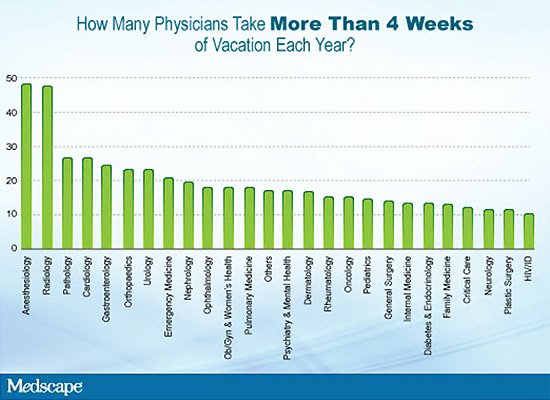
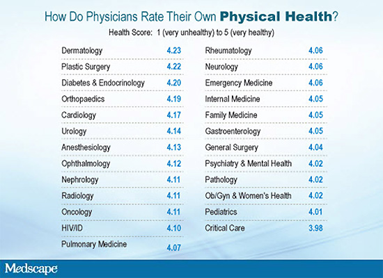

Третья часть опроса врачей-инфекционистов в США посвящена социальным моментам — отпуску, семье, социальной активности, здоровью, хобби и… немного политики.
Отпуск
Врачи-инфекционисты — это та категория врачей, которая работает много. Отпуск у них, как правило, меньше, чем у врачей других специальностей. Связано это, с одной стороны, с тем, что некоторые врачи-инфекционисты во время отпуска занимаются волонтерской работой, с другой стороны, ежегодный доход у них ниже, чем у врачей многих других специальностей, в связи с чем врачи-инфекционисты должны работать больше для того, чтобы «держаться на плаву». У более чем 30% врачей-инфекционистов ежегодный отпуск составляет 2 недели и меньше (для сравнения — такая продолжительность отпуска обычна для 25% врачей в США в целом) и только 10% врачей-инфекционистов (наименьший процент среди всех специальностей) могут позволить себе отпуск продолжительностью более 4 недель ежегодно (рисунок 4).
Рисунок 4. У врачей каких специальностей ежегодный отпуск составляет более 4 недель (доля врачей, которые отдыхают более 4 недель за год)?

Как и другие доктора, врачи-инфекционисты предпочитают путешествовать в другие страны, пляжный отдых, осмотр культурных достопримечательностей, путешествие на машине и кемпинг.
Семейное положение
Около 80% врачей-инфекционистов сообщили, что они женаты/замужем на момент проведения опроса, что составляет несколько меньший процент по сравнению с врачами других специальностей, участвовавшими в опросе, в целом, но это значительно выше, чем средний показатель во взрослой популяции США, который равен 51%. Частота разводов оказалась на уровне 5,6% — как и, в целом, у врачей других специальностей. Женщины-врачи чаще были одиноки, чем мужчины (14% vs 5,6%).
Насколько семейное положение влияло на ощущение счастья? Наибольшее ощущение счастья отмечали врачи-инфекционисты, которые вступили в брак повторно, затем те, кто не состоял в официальном браке, но жил с партнёром. На третьем месте были врачи, которые были женаты/замужем в первый раз. Наименее счастливы были одинокие врачи-инфекционисты, и на последнем месте — разведённые доктора.
Страна рождения
Среди врачей-инфекционистов 58% родились в США, 10% переехали в США в детском возрасте. Оставшаяся часть (32%) эмигрировала в США будучи уже взрослыми. Этот показатель оказался выше по сравнению с врачами других специальностей (26,3%). Наибольшая доля врачей-инфекционистов, родившихся не в США, эмигрировала из стран Азии.
Любимое времяпрепровождение
Чем занимаются врачи-инфекционисты в свободное от работы время (если оно, конечно, у них бывает)? Топ-5 вариантов проведения свободного времени врачами-инфекционистами: чтение, спорт и физическая активность, путешествия, культурная жизнь и еда/вино. Почти 23% врачей-инфекционистов получают удовольствие, «путешествуя» по бескрайним просторам Всемирной паутины.
Использование СМИ и Интернет
Специалисты в области инфекционных болезней являются весьма продвинутыми в техническом плане. Хотя врачи старшего возраста, в целом, реже используют СМИ по сравнению с их молодыми коллегами, более старшие врачи-инфекционисты используют Интернет и СМИ с такой же частотой, как и их молодые коллеги других специальностей. Что касается посетителей медицинского портала Medscape, 60-летние врачи-инфекционисты активно пользуются Facebook, LinkedIn и Twitter.
Здоровье и все, что с ним связано
Самооценка здоровья врачей
Врачи-инфекционисты, которым было предложено оценить состояние своего здоровья по 5-бальной шкале (1 балл — самое плохое состояние здоровье, 5 баллов — наилучшее состояние здоровья, которое только можно себе представить), оценили состояние своего здоровья на 4,1 балла, при этом врачи в возрасте 41-50 лет оказались наиболее здоровы (4,21 балла), а 30-летние доктора — несколько менее здоровы (3,97 баллов).
Рисунок 5. Самооценка здоровья врачей в зависимости от сферы деятельности/специальности

В ряде госпиталей активно внедрена политика отказа в принятии на работу специалистов в области здравоохранения с избыточной массой тела, в связи с чем в США активно обсуждается следующая проблема: может ли больница предъявлять требование: «Только худые доктора могут работать здесь» Среди врачей-инфекционистов 30,4% отметили, что расценивают себя как человека с избыточной массой тела (в целом, по всем врачам данный показатель составил 32,9%) и 4% допускают, что страдают ожирением (5,6% в общей популяции врачей, принимавших участие в опросе).
Физическая активность и занятия спортом
Как оказалось, чем старше становятся врачи, тем более часто (или больше по продолжительности) они занимаются спортом. Данное утверждение в полной мере приемлемо и для врачей-инфекционистов. Почти 70% врачей-инфекционистов в возрасте 30-40 лет отметили, что занимаются спортом 1 раз в неделю и реже, 60% докторов в возрасте 51-60 лет и 76% тех, кому 61-70 лет, сообщили, что занимаются спортом 2 и более раз в неделю. Наиболее популярными видами физической активности у врачей-инфекционистов являются аэробика (73%) и силовые упражнения (22%), а 17% увлекаются йогой.
Курение и алкоголь
Очень малая часть (менее 1%) врачей-инфекционистов курят, 4,4% курили раньше. 69% врачей сообщили, что употребляют алкоголь, а 31% вообще не пьёт (статистика, сопоставимая с национальными данными по США).
Чтобы Вы предприняли, если бы…
Врачам было предложено ответить на вопрос «Что бы Вы сделали, если бы у Вас было диагностировано неизлечимое заболевание»? Предлагались многие варианты ответов, однако большинство врачей выбрало следующие:
- Активное (даже агрессивное лечение) так долго, как я только смогу выдержать — 11%;
- Я выбираю паллиативное лечение/удовлетворительное качество жизни на протяжении оставшегося периода жизни — 75%;
- Я не знаю — 15%.
Врачи-инфекционисты оказались менее амбивалентны по сравнению с врачами других специальностей, среди которых 23% сообщили, что не знают, что они будут делать в случае диагностики у них неизлечимого заболевания.
Политика
Правые, средние, левые Или за кого Вы будете голосовать на выборах?
В ходе опроса, проведённого в период с 29 мая по 13 июня, врачи-пользователи Medscape указали, что они бы повторно выбрали Барака Обаму — за него отдали свои голоса 62,3% опрошенных, за Митта Ромни — 31,9%, а 5,8% воздержались.
ID Docs: Money, Lifestyle, and Politics
Medscape